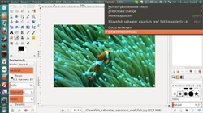
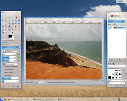
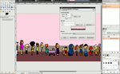
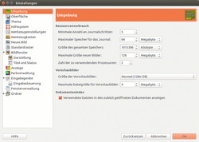

GIMP
Dieser Artikel wurde für die folgenden Ubuntu-Versionen getestet:
Ubuntu 17.10 Artful Aardvark
Ubuntu 16.04 Xenial Xerus
Ubuntu 14.04 Trusty Tahr
Zum Verständnis dieses Artikels sind folgende Seiten hilfreich:
 GIMP
GIMP  (GNU Image Manipulation Program) ist das am weitesten verbreitete Open-Source-Bildbearbeitungsprogramm. Es ist für eine Reihe von Betriebssystemen, darunter auch Linux, verfügbar. Hier geht es in erster Linie um Installation und Konfiguration. Anleitungen zur konkreten Bedienung des Programms sind im Abschnitt Links am Ende des Artikels aufgeführt. Wem das Programm zu kompliziert erscheint, kann sich Fotoxx oder diese Liste mit alternativen Programmen anschauen.
(GNU Image Manipulation Program) ist das am weitesten verbreitete Open-Source-Bildbearbeitungsprogramm. Es ist für eine Reihe von Betriebssystemen, darunter auch Linux, verfügbar. Hier geht es in erster Linie um Installation und Konfiguration. Anleitungen zur konkreten Bedienung des Programms sind im Abschnitt Links am Ende des Artikels aufgeführt. Wem das Programm zu kompliziert erscheint, kann sich Fotoxx oder diese Liste mit alternativen Programmen anschauen.
Grundsätzliches¶
Auch wenn die Benutzeroberfläche von GIMP auf den allerersten Blick etwas spartanisch aussieht, sollte man sich davon nicht täuschen lassen. Insbesondere die Filter haben es wirklich in sich und bieten teilweise eine Vielzahl von Parametereinstellungen, die nicht einmal professionelle Programme wie Photoshop besitzen. So wurde mit GIMP 2.4 SIOX zum halbautomatischen Freistellen von Vordergründen implementiert, ein Werkzeug zum perspektivenkorrigierten Klonen sowie viele andere Erweiterungen (Rote-Augen-Entfernen, Linsenkorrektur, Heilen-Pinsel...) eingeführt.
|  |
| GIMP 2.8 im Einzelfenstermodus unter Unity |
Natürlich erfordert das Arbeiten mit GIMP für Leute, die bisher Photoshop oder ähnliche Programme gewohnt waren, eine gewisse Eingewöhnungszeit, die sich nach einer Weile aber auszahlt, besonders da GIMP für alle wichtigen Betriebssysteme (Linux, Mac OS X, Windows) erhältlich ist. Weitere Kritikpunkte bei GIMP sind die fehlende Unterstützung von 16-bit pro Kanal und der fehlende CMYK-Modus. 16-bit-Unterstützung und CMYK-Unterstützung wird im Zuge der Umstellung auf GEGL kommen.
Als Ergänzung zu GIMP, das ein wirklich hochprofessionelles Arbeiten ermöglicht, empfiehlt sich das Programm CinePaint , das - obwohl an sich für 35mm-Filme konzipiert - auch Einzelbilder in bis zu 32-bit pro Kanal bearbeiten kann. Sowohl GIMP als auch CinePaint benutzen ein eigenes Format mit der Endung .xcf, die beiden Formate sind aber nicht kompatibel. Als Dateiaustauschformate empfehlen sich beispielsweise TIFF oder PNG, die - im Gegensatz z. B. zu JPEG - auch 16-bit pro Kanal sowie Alpha-Kanäle (Transparenz) speichern können.
Installation¶
Als Grundlage muss nur das folgende Paket installiert werden [1]:
gimp
 mit apturl
mit apturl
Paketliste zum Kopieren:
sudo apt-get install gimp
sudo aptitude install gimp
Daneben empfiehlt sich für Einsteiger auch die Installation der Programmhilfe und die deutsche Übersetzung (unter GNOME automatisch installiert):
gimp-help-de (die eigentliche Dokumentation auf Deutsch)
language-pack-gnome-de (enthält die deutsche Übersetzung)
mit apturl
Paketliste zum Kopieren:
sudo apt-get install gimp-help-de language-pack-gnome-de
sudo aptitude install gimp-help-de language-pack-gnome-de
Darüber hinaus gibt es noch eine Reihe weiterer Pakete, die aber nur für besondere Aufgaben erforderlich sind, wie z.B.
gimp-dcraw (universe, optional, zum Importieren von RAW-Dateien aus digitalen Kameras)
gimp-ufraw (universe, optional, zum Bearbeiten von RAW-Dateien aus digitalen Kameras mit UFRaw)
gimp-gap (universe, optional, zum Erstellen von Animationen)
gimp-gutenprint (universe, optional, alternative Druckfunktion und Treiber)
mit apturl
Paketliste zum Kopieren:
sudo apt-get install gimp-dcraw gimp-ufraw gimp-gap gimp-gutenprint
sudo aptitude install gimp-dcraw gimp-ufraw gimp-gap gimp-gutenprint
PPA¶
Die jeweils aktuelle Version ist über ein "Personal Package Archiv" (PPA) [2] erhältlich.
Adresszeile zum Hinzufügen des PPAs:
ppa:otto-kesselgulasch/gimp
Hinweis!
Zusätzliche Fremdquellen können das System gefährden.
Ein PPA unterstützt nicht zwangsläufig alle Ubuntu-Versionen. Weitere Informationen sind der  PPA-Beschreibung des Eigentümers/Teams otto-kesselgulasch zu entnehmen.
PPA-Beschreibung des Eigentümers/Teams otto-kesselgulasch zu entnehmen.
Damit Pakete aus dem PPA genutzt werden können, müssen die Paketquellen neu eingelesen werden.
Nach dem Aktualisieren der Paketquellen erfolgt die Installation wie oben angegeben. Allerdings sollte man beachten, dass es zu Problemen mit anderen GIMP-Paketen (z.B. Erweiterungen) aus den offiziellen Paketquellen kommen kann.
Hilfe für Photoshop-Umsteiger¶
|  |
| GIMP im Mehrfenstermodus unter KDE Plasma |
Benutzern, die bisher das weit verbreitete Photoshop eingesetzt haben, fällt oftmals die Umgewöhnung auf GIMP sehr schwer, da sich das Bedienkonzept deutlich unterscheidet. GIMP arbeitet im Gegensatz zu Photoshop standardmäßig mit mehreren einzelnen Fenstern und einer anderen Menüstruktur. Jedoch kann man sich – bei Bedarf – die Oberfläche von GIMP etwas an Photoshop anpassen.
Alle Fenster in einem Rahmen¶
Ab der Version 2.8 kann man unter dem Menüpunkt "Fenster" den Einzelfenstermodus einschalten.
Tastenkürzel wie bei Photoshop¶
Um die Tastenkürzel (keyboard shotcuts) an die Belegung bei Photoshop anzupassen, kann man die Datei ~/gimp-2.8/menurc erstellen bzw. bearbeiten. Details sind dem Blogbeitrag Gimp mit gleichen Tastatur-Shortcuts wie Photoshop  (06/2011) zu entnehmen.
(06/2011) zu entnehmen.
Tiling-Fenstermanager¶
|  |
| GIMP unter Awesome |
Fortgeschrittenen Benutzern, die mit der Bedienoberfläche von GIMP unzufrieden sind, sei die Benutzung eines Tiling-fähigen Fenstermanagers nahegelegt. Im Artikel Awesome ist die Konfiguration für das Zusammenspiel mit GIMP ausführlich beschrieben.
Erweiterungen¶
Über Erweiterungen (Plugins) kann GIMP mit zusätzlichen Funktionen ausgestattet werden. Eine große Anzahl von Plugins findet man in der offiziellen GIMP Plugin Registry . Viele Erweiterungen lassen sich direkt über die Paketverwaltung von Ubuntu installieren [1]. Dazu genügt der Suchbegriff gimp. Bei den Suchergebnissen ist in der Paketbeschreibung auch vermerkt, dass es sich um ein Plugin für GIMP handelt.
Die interessantesten Plugins sind im folgenden Paket zusammengefasst und einfach über den Paketmanager installierbar. Enthalten ist u.a. die Stapelverarbeitung mit Hilfe des Plugins "David's Patch Processor".
gimp-plugin-registry (universe)
mit apturl
Paketliste zum Kopieren:
sudo apt-get install gimp-plugin-registry
sudo aptitude install gimp-plugin-registry
Wer Erweiterungen (für den aktuellen Benutzer) selbst installieren möchte, lädt die jeweilige Erweiterung manuell herunter, entpackt sie und kopiert die enthaltenen Dateien und Ordner nach ~/.gimp-2.6/plug-ins/ bzw. ~/.gimp-2.8/plug-ins/.
Erwähnenswert sind folgende Erweiterungen:
Das Resynthesizer-Plugin
. Es kann fehlende Bildteile synthetisch erzeugen, kann aber auch sogenannte near-linear textures erzeugen. Das sind kachelbare Texturen, die aber viel natürlicher wirken, da sie nicht so regelmäßig sind. Das Plugin kann über die Ubuntu-Paketverwaltung installiert [1] werden. Der Name des Pakets lautet gimp-resynthesizer (universe)
mit apturl
Paketliste zum Kopieren:
sudo apt-get install gimp-resynthesizer
sudo aptitude install gimp-resynthesizer
Nach der Installation lässt sich das Plugin über das Untermenü "Filter" aufrufen.
Im Set G'MIC (GREY's Magic Image Converter) ist das bisher als eigenständig bekannte GREYCstoration-Rauschentfernungs-Plugin integriert. Hiermit kann - wie bei den bekannten Photoshop-Plugins Noise-Ninja oder Neat Image - Bildrauschen entfernt werden. Die erzielbare Qualität ist ausgezeichnet und braucht keinen Vergleich mit seinen kommerziellen Pendants zu scheuen. G'MIC bietet eine ganze Sammlung von Bildbearbeitungsoptionen und Filtern (inkl. verschiedener Werkzeuge zur Rauschentfernung), es ist auch als Kommandozeilen-Programm verfügbar.
Das Bildgrößenanpassungs-Plugin
erlaubt - einzigartig - Bildgrößenänderungen bei Erhalt der Proportionen; hierzu werden "überflüssige" Bildteile aus dem Bild herausgerechnet. Auf Wunsch kann der Benutzer auch angeben, welche Bildteile unbedingt erhalten und welche 'überflüssig' sind. Eignet sich auch hervorragend dazu, unerwünschte Objekte aus einem Bild zu entfernen. Weitere Details enthält der Artikel Seam Carving.
Draw Arrow
- wer die Möglichkeit vermisst, Pfeile zu zeichnen, installiert diese Erweiterung. Da es sich um ein Skript (.scm) handelt, lautet der entsprechende Zielordner ~/.gimp-2.6/scripts/ bzw. ~/.gimp-2.8/scripts/.
MathMap-Plugin
ist eine programmierbare Filtersammlung mit eigener, einfach zu erlernender Programmiersprache.
Interessant ist auch die Möglichkeit, mithilfe des Paketes gtkam-gimp direkt aus GIMP heraus eine Digitalkamera ansteuern zu können.
Problembehebung¶
Docks auf die Fensterleiste minimieren¶
 Die Fenster der Docks "Werkzeugkasten" sowie "Ebenen, Kanäle,..." lassen sich in den Standardeinstellungen nicht minimieren. Dieses Verhalten kann man recht einfach ändern, indem man unter
"Bearbeiten -> Einstellungen -> Fensterverwaltung"
"Fenster-Manager-Hinweise":
"Hinweis für Docks und den Werkzeugkasten"
auf "Normales Fenster" umstellt.
Siehe auch: GIMP-Docs, Fenster-Management und Fehlerbericht 283115.
Alternativ sorgt die Taste Tab ⇆ im Bildfenster dafür, dass Werkzeugkasten und Ebenendock (oder eventuell weitere Docks) ausgeblendet werden. Ein erneutes Drücken von Tab ⇆ blendet sie wieder ein.
PGEI¶
130 verschiedene Plugins, Erweiterungnen und Pinselspitzen sind in der Sammlung PGEI (Photoshop and GIMP Extensions Installer) zusammengefasst. Aus dieser Sammlung kann man entweder alle Erweiterungen installieren oder auch nur einzelne. Das Paket kann als .jar-Datei heruntergeladen werden.
Hinweis!
Fremdsoftware kann das System gefährden.
Links¶
Online-Benutzerhandbuch
GIMP 2.8GIMP API Reference Manual
- interessant, um Plugins oder Module zu erstellen
GIMP-Werkstatt
- mit vielen TutorienGIMP-Werkstatt-Forum
für GIMP-Kurs 2.8 und Tutorien
GIMPUSERS.de
- Community, News, TutorialsHDR-Workaround mit GIMP
 - Leseprobe im PDF-Format
- Leseprobe im PDF-FormatSpacepenguins Pinguin-Schule: The GIMP
GIMP-Tutorials auf Youtube
- Videotutorials für Einsteiger und Fortgeschrittenegimps.de
- ein paar nützliche und einfache Online-Kurse für die Bildbearbeitung
GIMPUSERS.com
- Community, News, Tutorials, VideosArtikel im SPIEGEL/Netzwelt
- Kostenlos-Software GIMP "So funktioniert der Gratis-Bildbearbeiter", 08/2011"Grokking the GIMP"
- Online-Version des Buches von Carey Bunks. Dieses Buch bezieht sich allerdings noch auf die Version 1.x (mit Version 2.0 ist die ganze Benutzeroberfläche deutlich komfortabler geworden).empfehlenswert ist hier dennoch der Schlagwort-Index
Vergleich von Photoshop und GIMP über 70 Funktionen
(.pdf ca. 1,62 MB) – Artikel aus dem GIMP Magazine der 70 Funktionen der beiden Programme vergleichtBildbearbeitung
 Programmübersicht
Programmübersicht
- Erstellt mit Inyoka
-
 2004 – 2017 ubuntuusers.de • Einige Rechte vorbehalten
2004 – 2017 ubuntuusers.de • Einige Rechte vorbehalten
Lizenz • Kontakt • Datenschutz • Impressum • Serverstatus -
Serverhousing gespendet von